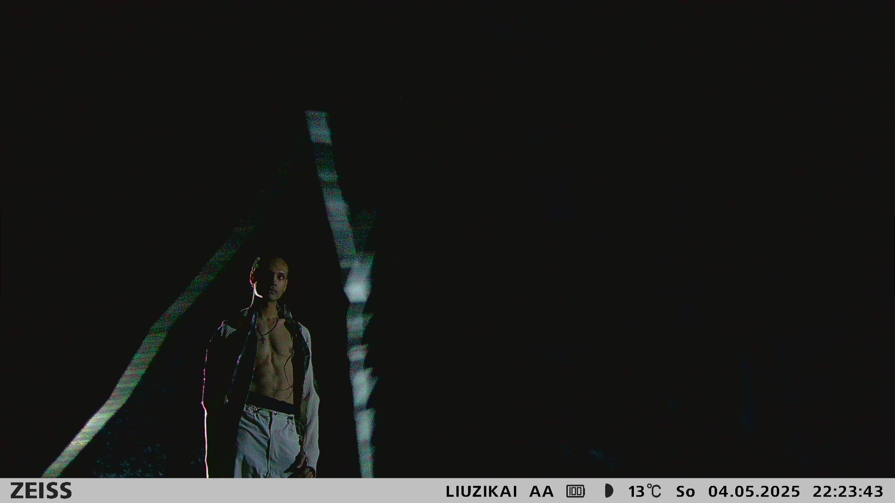
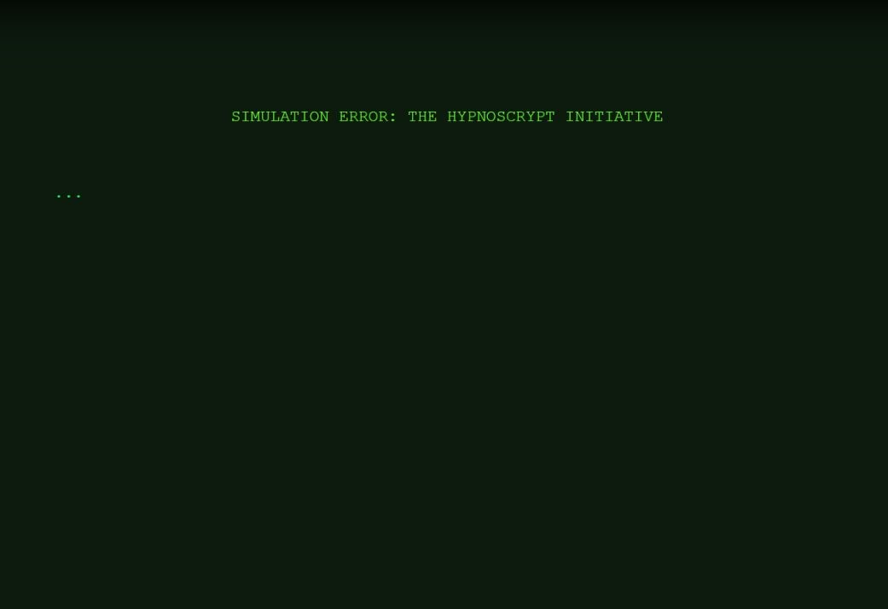
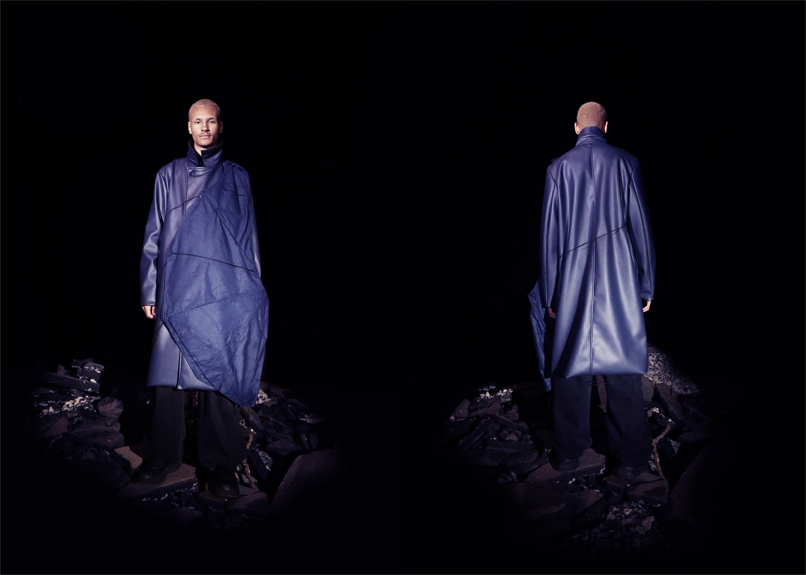

DENNIS UKANDU
digital artist / intermedia practitioner
foreverfuck?
2025
Video installation presented in (Against) Transience 2025. Exploring themes of digital permanence; what it means for a machine to remember us.

Chinese Whispers
2025
A collaborative fashion project exploring cultural identity, heritage, and reinterpretation.

Hypnoscrypt Initiative
2024
An experimental non-linear narrative game exploring surveillance and state ethics in an absurdist and campy speculative digital world.

Synthetic Soul
2023
Conceptual fashion project exploring posthuman identity, myth, and emotion through sci-fi-inspired design.

Worldwide Hedonism Broadcast
2021
An observational portrait series capturing the energy, excess, and intimacy of post-lockdown youth.
About
Dennis Ukandu is a digital artist and intermedia practitioner working at the intersection of technology, identity, and speculative futures. His practice explores transhumanist themes, digital self-representation, and the construction of identity through video game avatars and virtual environments.
Education
M.Phil Digital Arts and Intermedia Practices, Trinity College Dublin
BA Modern Languages - Russian and Spanish, Trinity College Dublin
M.Phil Digital Arts and Intermedia Practices, Trinity College Dublin
BA Modern Languages - Russian and Spanish, Trinity College Dublin
Contact
dennis.ukandu@outlook.com
+353 89 988 6345
dennis.ukandu@outlook.com
+353 89 988 6345